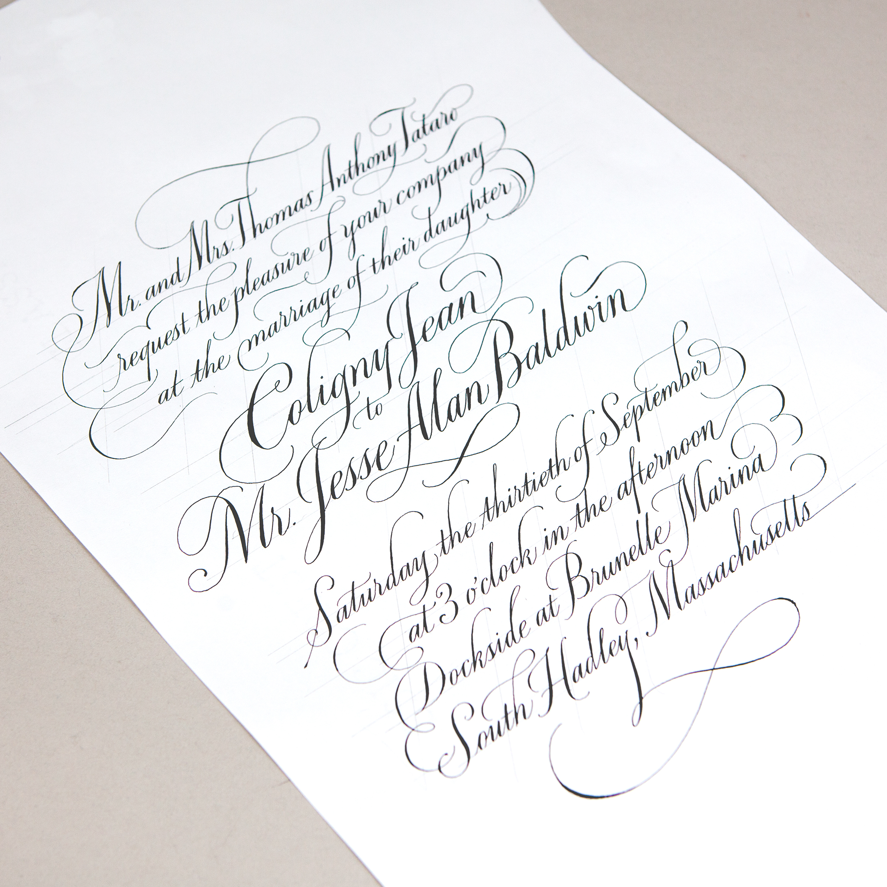
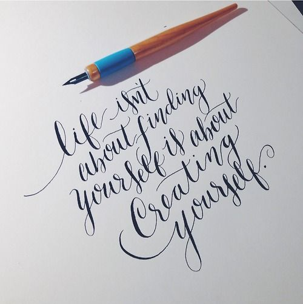
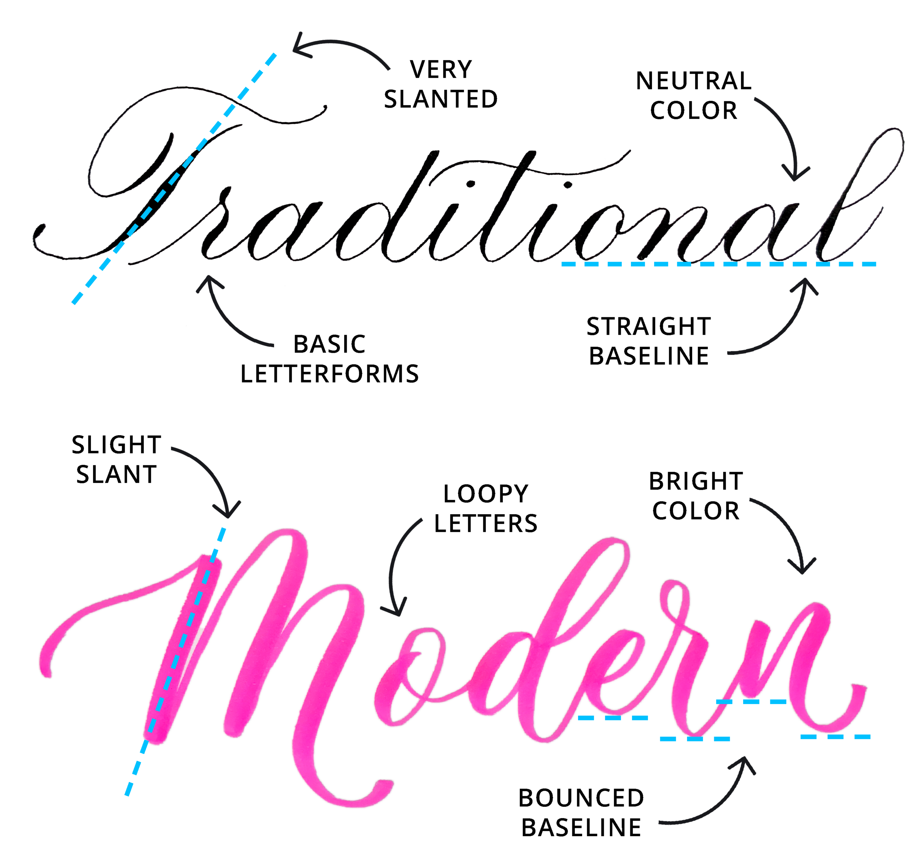

Introduction
Western calligraphy is the art of writing practiced in the Western world, where Latin alphabets are mostly used.
Calligraphy had been widely used and transformed a lot through the years.
As traditional calligraphy is mostly used for official documents, calligraphy are more common nowadays where it is applied on daily designs.
So what is calligraphy? Calligraphy is a type of script (style of writing), that has all the alphabets in a word connected.
It looks like cursive writing, but is not.
There are two types of calligraphies, which are Traditional Calligraphy and Modern Calligraphy.
Traditional Calligraphy
Traditional Calligraphy had been widely used since a couple of centuries ago, which it is mainly used for document writing or writing letters back then. It is elegant and sophisticated to look at.
Unlike modern calligraphy styles, traditional Calligraphy has its own set of rules and one must strictly follow them.
The baselines for all of the alphabets are fixed, angles and lines must be consistent, and the letterings follows the alphabet anatomy strictly. There are no room for modifications
The most common traditional calligraphy style is Copperplate, which nowadays you can find them on wedding invitations and such.
Traditional calligraphies uses dip pens (either straight or slanted) and ink. You will need to constantly dip your pen nib into the ink when writing.
Learn more about: Copperplate Calligraphy & Blackletter Calligraphy
|  |
Modern Calligraphy
|  |
Modern calligraphy covers tons of writing styles, which is hard to give a definition.
The best way to differentiate modern calligraphy is 'any styles that are not traditional calligraphy'.
Modern calligraphy is fun, whimsical and free to modify. Unlike traditional calligraphy, modern calligraphy does not have any rules or standards to follow (only some tips and guidelines to help).
A twist is added to the traditional rules. Flourishing can be added, the alphabet baselines can be ignored, alphabets can be upright instead of slanting...
Modern calligraphy is all about expressing your own style and finding beauty in it.
Modern calligraphy can be written with all sorts of tools, brush pens, brushes, pencils and even traditional dip pens!
Learn more about: Brush Calligraphy, Bounce Letterings & Faux Calligraphy
Differences
Here are some of the differences between Traditional calligraphy and Modern Calligraphy. Get to know their differnces and pick one that suits you more!
1. Traditional: Rules to follow strictly
Modern: Free to twist and play around with the letters
2. Traditional: Elegant, Sophisticated
Modern: Fun, Whimsical
3. Traditional: More Slanted scripts
Modern: More upright, no fixed angles
4. Traditional: Consistant lines, spacings, grids
Modern: Varies according to writers' preferance / purpose
5.Traditional: Basic letterforms
Modern: Modern Letterforms
6.Traditional: Gives a more formal impression
Modern: Can be used for various purposes/ media
7.Traditional: Paper-based
Modern: Can be written on paper/ digitally
|  |